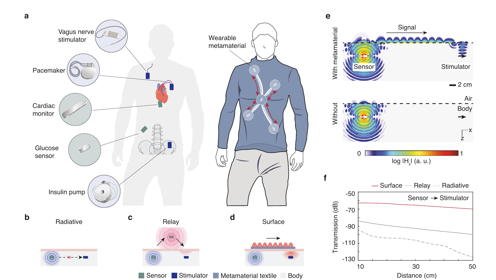
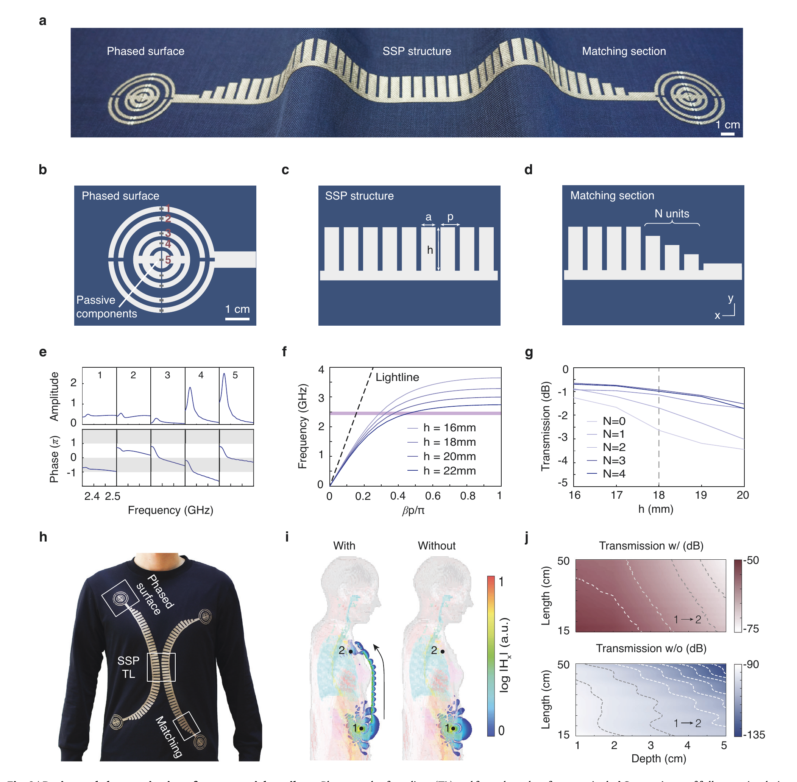
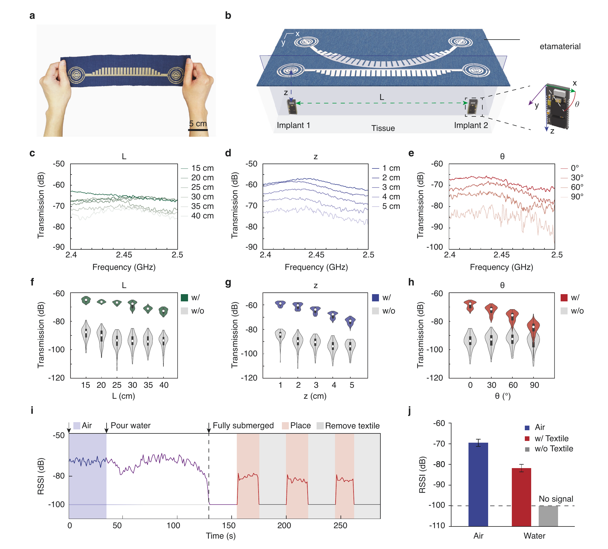
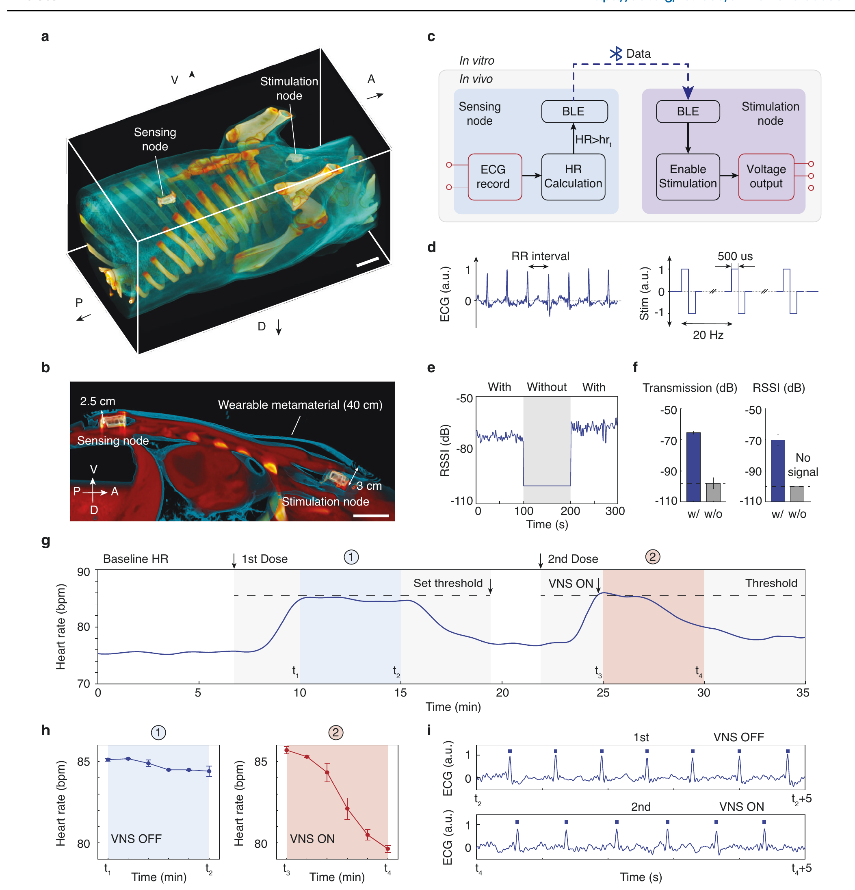

FIG. 1
总策略：不再横穿身体，而是沿着身体表面绕过去
第一图先比较三条网络路径。普通辐射链路在组织里快速衰减；外部中继能绕过一部分组织，但多了一台要充电、会失效的设备；本文把无源织物本身变成传播通道。

人体组织会强烈吸收和反射 2.4 GHz 无线信号，胸部传感器很难直接和颈部刺激器通信。作者把两端的相控环形表面与中间的人工表面等离激元波导做进衣服：先把植入物的辐射耦合到体表，再沿织物低辐射传播，最后聚焦回另一枚植入物。它把链路提升约 30–40 dB，并在一头猪上完成了 40 cm 级 BLE 闭环心率调节；这是扎实的系统原型，还不是临床有效性证据。
证据边界：图片截自用户提供的正式论文 PDF；论文为 CC BY 4.0 开放获取，页面只发布研究解读所需的完整图体，不分发原始 PDF。“无源增强”表示同一发射条件下链路损耗减少，并不是织物凭空提供功率增益；两枚植入节点本身仍各由 100 mAh 锂电池供电。
作者绕开“让无线电直接穿过几十厘米组织”这条高损耗路径，改成“植入物 → 相控织物端口 → 体表 SSP 波导 → 相控织物端口 → 植入物”。仿真、水槽测量、真实 BLE 断连/重连和单头猪闭环实验构成了由弱到强的证据链。最硬的工程结果是活体中约 33 dB 链路提升，使原本低于 −100 dB、无法建立的 BLE 连接恢复；最需要保留的限定是活体只有 n=1，治疗对照又按固定先后顺序完成。
第一图先比较三条网络路径。普通辐射链路在组织里快速衰减；外部中继能绕过一部分组织，但多了一台要充电、会失效的设备；本文把无源织物本身变成传播通道。

这不是一块普通导电布。两端的同心开口环用电容设置电流相位，负责从体内“收”与向体内“聚焦”；梳齿 SSP 波导负责沿身体轮廓传播；渐变梳齿则降低两个模式之间的反射。

作者在 50×45×30 cm 水槽中扫描距离、深度和天线转角，再把矢量网络分析仪换成真实 BLE 模块做断连/重连测试。水不是分层人体，但它比只展示单点仿真更接近可复验的链路压力测试。

一枚胸部 loop recorder 读取 ECG 并计算心率，另一枚颈部节点刺激迷走神经；心率超过阈值时，前者通过 BLE 让后者输出双相脉冲。CT、RSSI、S21 和 ECG 把“放在哪里、是否连上、是否刺激、心率是否变化”串了起来。

方法补充：工作频带为 2.4–2.5 GHz ISM；相控环加载 0.3–4.0 pF 电容，SSP 几何参数包含 a=4 mm、b=6 mm、p=8 mm、织物厚度 t=1.5 mm；人体模型中的接收偶极子长 10 mm、设计深度 4 cm。活体实验使用一头 6 月龄、45 kg 雌猪，胸部 ECG 节点与颈部 VNS 节点均由 100 mAh 锂电池供电。
← 返回论文细读书架